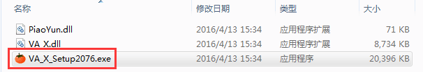
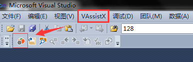
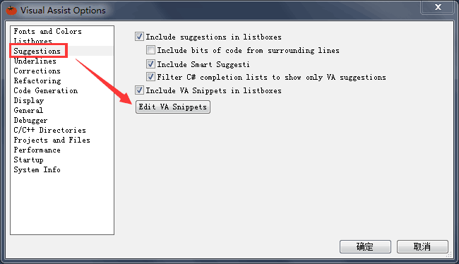
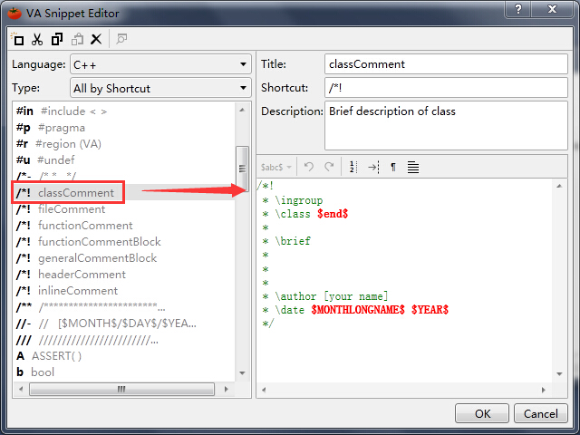
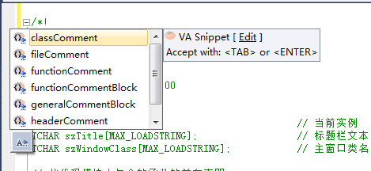
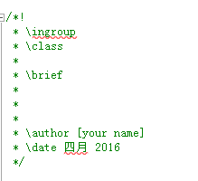

VAssistX 安装及在VS2010中使用
有时候，我们要编码实现某个功能，或许如行云流水一气呵成，但就是懒得给这代码添注释。过短时间，等需要改动的时候，那种费力耗时的再去重新理解的过程就不用描述了吧。所以说，规范的代码注释对于开发者来说意义重大，然而，阻碍我们写代码注释的一大原因就是太麻烦、无规范。
这时，我们的主角 + 好助手——VAssistX出现了。在这里介绍一下VAssistX安装及在VS中的使用。
在VS中使用VAssistX会大大的提高你的工作效率，可以为你快速便捷的添加统一规范的注释。无论怎样，你用或不用，它就是那里，一动不动。下面进入正题：
VAssistX百度云盘下载地址：云盘链接，点我下载！
1. 安装VAssistX，安装时关闭正在运行的VS。

2. 选择你安装的VS版本,Install。

3. 安装完成后，打开VS2010，菜单栏中会出现VAssistX菜单项，说明安装成功。

4. 打开VAssistX选项，自定义注释，话不多说，直接上图。


$YEAR$, $DATE$ $HOUR$: $MINUTE$: $SECOND$等从字面就能猜到就是当前的时间， 除此之外，VA中还有很多宏提供使用。
5. 在代码编写中，输入快捷键，会自动弹出我们定义的注释规范，选择需要的，看效果。


6. VAssistX规范注释示例 （参考：https://github.com/gaohr/SEIMS/blob/master/doc/Developers.md）
//! Brief description, can span only 1 line
/*!
* More detailed description.
* Feel free to span as many lines
* as you wish... All allowed.
*/
在VA中设置如下（Title，Description可以按照自己想法设置，下面均不再重复）：
Title: generalCommentBlock
Shortcut: /*!
Descrition: General Doxygen Commen Block
Code:
//! $end$
/*!
* \ingroup
*
*/
void function1(); //!< Correct
void function2(int i); //!< WRONG! Comment on parameter i, but function not documented!
void function3(int i); //!< Some int. Correct - both function and parameter documented
上面的例子说明，对于含有参数的函数定义，不能用in-line comment的方式。VA中的设置如下：
//!<
/*!
* \file [filename]
* \brief
*
* \author [your name]
* \date
*
* [your comment here]
*/
在VA中设置：
/*!
* \ingroup
* \file $FILE_BASE$.$FILE_EXT$
* \brief
*
* \author [your name]
* \version
* \date $MONTHLONGNAME$ $YEAR$
*
* $end$
*/
/*!
* \ingroup
* \class [class name]
*
* \brief [brief description]
*
* [detailed description]
*
* \author [your name]
* \date
*/
VA中的设置：
/*!
* \ingroup
* \class $end$
*
* \brief
*
* \author [your name]
* \date $MONTHLONGNAME$ $YEAR$
*/
/*!
* \ingroup
* \brief [brief description]
*
* [detailed description]
*
* \param[in] [name of input parameter] [its description]
* \param[out] [name of output parameter] [its description]
* \return [information about return value]
* \sa [see also section]
* \note [any note about the function you might have]
* \warning [any warning if necessary]
*/
VA中设置：
/*!
* \ingroup
* \brief
*
* $end$
*
* \param[in]
* \param[out]
* \return
* \sa
* \note
* \warning
*/
\attention … paragraph where a message that needs attention may be entered
\author … paragraph where one or more author names may be entered
\brief … paragraph that serves as a brief description
\bug … paragraph where one or more bugs may be reported
\date … paragraph where one or more dates may be entered
\deprecated … paragraph indicating that this documentation block belongs to a deprecated entity
\exceptionor \throw … exception description for an exception object with name , followed by a description of the exception
\invariant … paragraph where the invariant of an entity can be described
\note … paragraph where a note can be entered
\par [(paragraph title)] … if a paragraph title is given this command starts a paragraph with a user defined heading
\param… parameter description for a function parameter with name ; multiple adjacent \param commands will be joined into a single paragraph; direction of the attribute may be specified:
e.g.
\param[in] param1 Description
\param[out] param1 Description
\param[in,out] param1 Description
\remarks … paragraph where one or more remarks may be entered
\return … return value description for a function
\retval… return value description for a function with name
\sa or \see … paragraph where one or more cross-references to classes, functions, methods, variables, files or URL may be specified; two names joined by either :: or # are understood as referring to a class and one of its members; one of several overloaded methods or constructors may be selected by including a parenthesized list of argument types after the method name
\since … used to specify since when (version or time) an entity is available
\test … paragraph where a test case can be described
\todo … paragraph where a TODO item is described
\version … paragraph where one or more version strings may be entered
\warning … paragraph where one or more warning messages may be entered
Fighting GISer!
最新博文